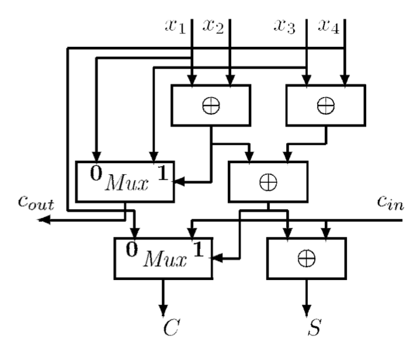
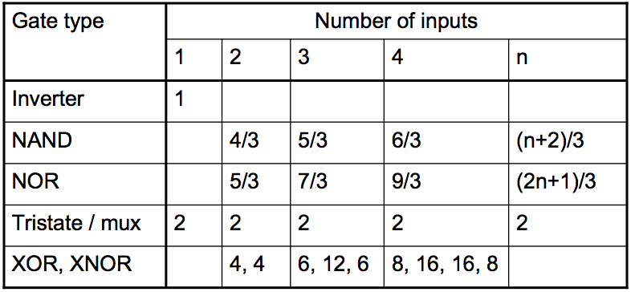
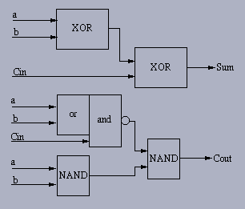

Input Format:
The input are Integers either in binary format or decimal. The
inputs need not be contiguous. The simulator counts the inputs and
correspondingly builds the OS Tree.
(4:2)Compressor and Compressor tree:
As shown in the following illustration, VLSI implementation will cause wire latency. According to logic effort method, which is proposed by
Harris et. al, we can compute the logic effort of the (4:2) Compressor based on two-input MUX and two-input XOR gate(parasitic delay is also considered).
The left table is for logic effort and the right one is for parasitic delay.

The longest path goes through two XOR gates and one MUX, so the path effort is 36 if the braching effort is ignored due to simplicity. In 65 nm technology, where RC=3ps, that will produce 108 ps delay.
Delay Calculation:
In this simulation, the minimum delay of the final output
is calculated. Looking at the schematic diagram below:

in 3-2 adder Carry delay is smaller than Sum delay. In
this design we assumed that Sum delay is smaller than twice of carry delay
as well.
Assuming:
Ta: arrival time of input "a"
Tb: arrival time of input "b"
Tcin: arrival time of input "Cin"
Ts: time that Sum will be ready, considering arrival
time of inputs
Tcout: time that Carry out will be ready, considering
arrival time of inputs
final output delays will be calculated as follow:
Ts = Max{ ( Max(Ta,Tb) + Sum Delay )
, ( Tcin + Sum Delay/2 ) }
Tcout = [ Max (Ta, Tb,Tcin) ] + Carry Delay